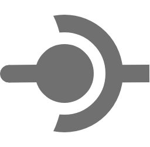

경계를
명확히 하는
개발자
규모가 큰 프로그램에서의 프로그래밍이란 곧 경계의 결정이죠.
내가 무엇을 어디까지 할 수 있는지,
당신은 나를 이용하기 위해서 무엇이 필요한지.
어떠한 기준으로 모듈을 나눌 것인지,
그 모듈들 사이의 인터페이스는 무엇인지.
안녕하세요. 저는 윤곽을 그을 줄 아는 개발자, 한수빈입니다.
저는 이런 사람입니다:
한수빈
HAN SUBIN
1998.03.14.
+82 10-4630-5791
hanidiot@gmail.com
github.com/SubinHan
EDUCATION
2023.02.
전북대 소프트웨어공학과 졸업
Tech
C++
Direct3D 12
CUDA
Unreal Engine 4
Git
SQL
Math & Physics
Calculus
Discrete Mathematics
Linear Algebra
Numerical Analysis
Fundamentals of Physics
Computer Science
Data Structure & Algorithm
File Struccture
Database
Operating System
Data Communication
Artificial Intelligence
Computer Graphics
Image Processing
Parallel Computing
Software Engineering
Software Development Process
Software Analysis & Design
UML
Software Architecture
Design Patterns
Software QA & Testing
이런 것도 봐보세요!